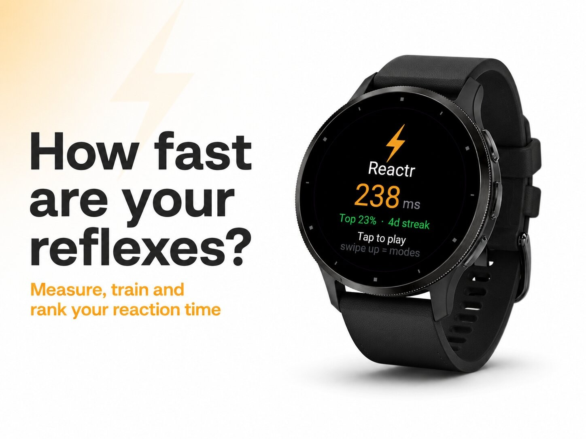
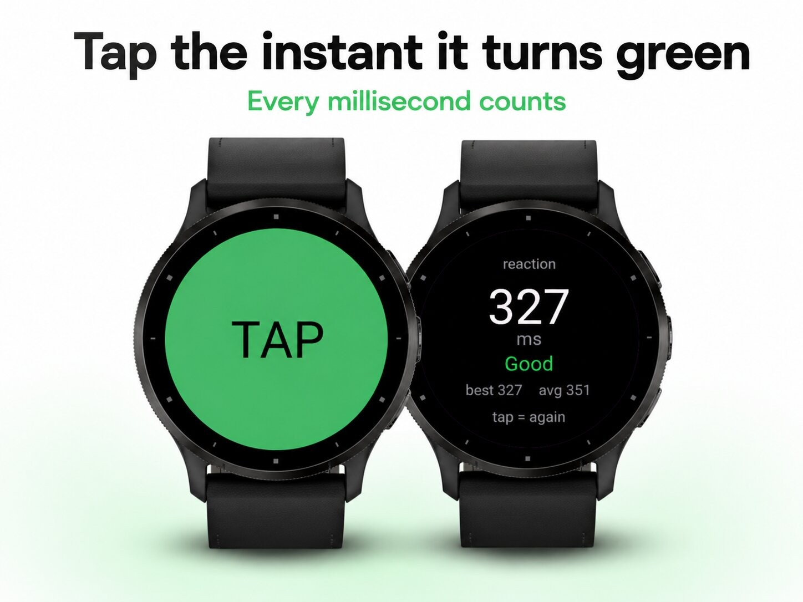
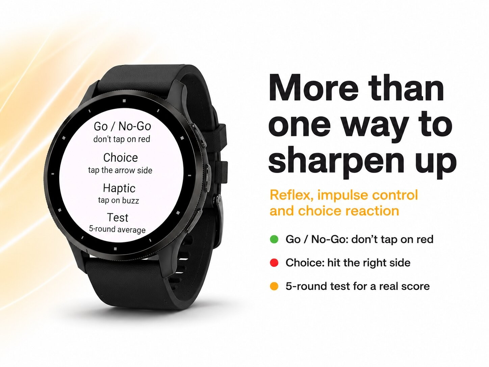
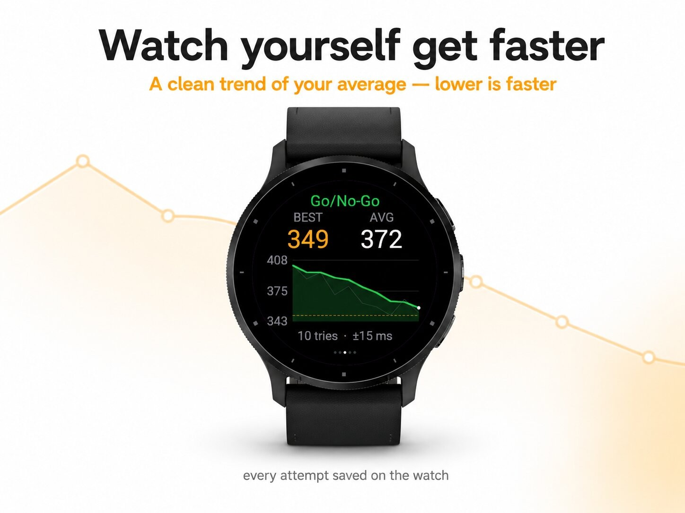
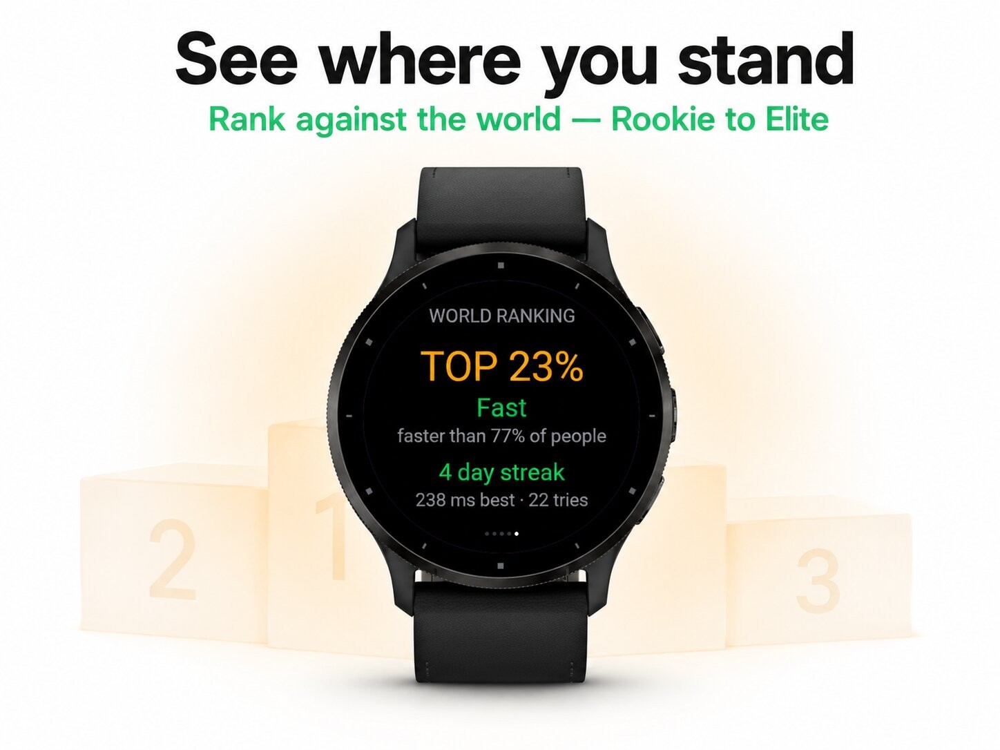

Sport & outdoors · Device app
Reaction-time trainer with a world ranking.





Reactr — how fast are your reflexes?
Green appears. You tap. A number flashes up: your reaction time in milliseconds. Simple to start, surprisingly hard to master — and now it lives on your wrist, no phone needed.
Reactr measures how quickly you respond, then helps you get faster. Tap too early and it catches you out. Tap the moment it turns green and you'll see exactly how sharp you are, with an instant rating from "Sluggish" all the way up to "LIGHTNING".
Five ways to train
See yourself improve
Every attempt is saved. A clean trend chart shows your moving average over time — a falling line means you're getting faster — with your personal best marked and a consistency score so you can see how steady you are. A daily streak keeps you coming back.
Where do you stand?
Reactr ranks your best reaction against a typical human reaction time and shows your place in the world: Top 10%, Top 5%, Top 1%… climbing the tiers from Rookie to Elite. Chase the next level.
Made for the watch
Quick to pick up, easy to obsess over. Reactr turns a spare 30 seconds into a sharper you.